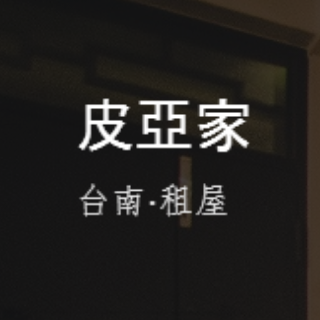
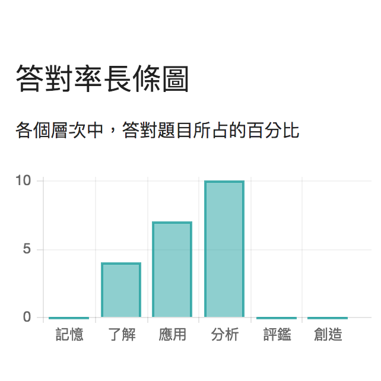
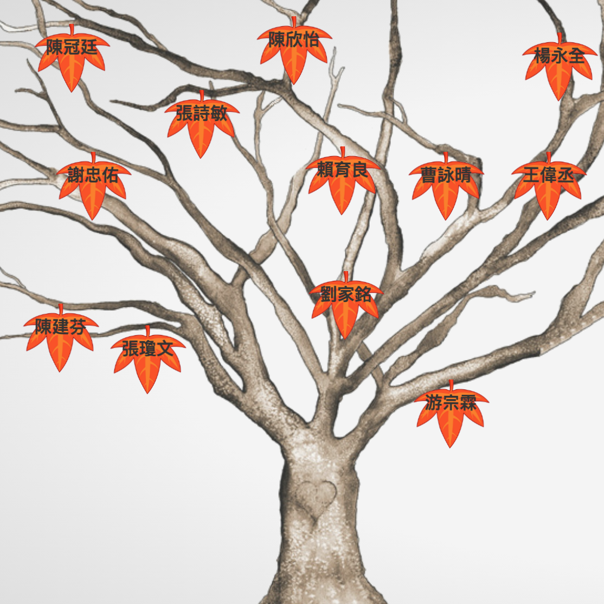

吐鲁番大视觉(精简版)
This is a VR/AR tourist application for Turpan ancient city, leading by Xinjiang government, China. This app includes interactive AR tour, 3D audio guide, and VR story game. I cooperated with front-end designers to build this app by using Unity. I was responsible for dataset management and backend developement.
居家核心肌力訓練
The is an AR application for at-home core training leading by Kaohsiung Medical University. This application enables users to see the detailed movement of a gesture by changing the dimension or enlarging the 3D models. I cooperated with front-end designers to build this app by using Unity. I was responsible for backend developement.
完美回憶
The app is cooperated with wedding companies to create a platform for wedding management, including 3D invitations and online wedding dress try-on. I cooperated with front-end designers to build this app by using Unity. I was responsible for dataset management and backend developement.
Badgerscalp
A student project done in course “Software Engineering” given by Prof. Peter Ohmann at UW Madison. It's a mobile platform for students to sell, buy or bid tickets for sports events. I was responsible for front-end development by using Ionic

Pinomia
Official website for a hostel in Taiwan. I was responsible for front-end developement.

Exam Analysis
Cooperated with junior high schools to create a web platform for analyzing students' performance and displaying the data in a user-friendly way. I was responsible for front-end developement.

Family Tree
Cooperated with NCKU guitar club to build the member management website, including animation for displaying member relationship. I was responsible for building the whole website.
Cookieholic
Cooperated with the cookie seller to build the official website for selling and displaying products. I was responsible for building the whole website.
Homework Sharing
Student project done in course “Web Programming” given by Prof. Chang Tien-Hao at NCKU. It's a social platform for students to exchange their notes, homework or publications. I was responsible for website front-end development.